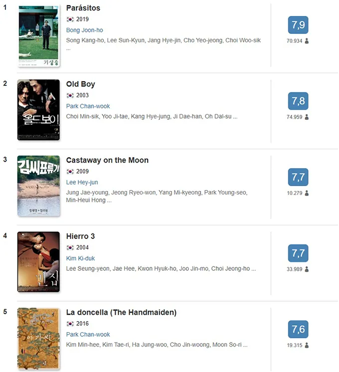

* 본문의 데이터와 수치는 2026년 8월 31일 기준으로 한다.
한국영화는 이제 한국만의 것이 아니다. 자국민으로서 ‘꺼드럭’거리는 것이 아니다. 근래 영화계 동향에서 드러난 부분이다. 2007년 영화 <디워>가 2026년 넷플릭스에서 최초 온라인동영상서비스(OTT) 공개된 것만으로 넷플릭스 인기 영화 순위에 이름을 올리고, 영화 <호프>가 9월 9일 배급사 네온(NEON)을 통해 북미에 개봉하는 상황은 한국영화가 전 세계 영화인과 대중의 이목을 모으고 있다는 증거이다. 이처럼 한국영화가 더 이상 한국 시장만을 타깃으로 해선 안 되는 상황, 그리고 그런 변화를 빠르게 캐치하기 위해선 각국의 관객·평단의 반응을 읽을 수 있는 통로가 필요하다. 글로벌 시대가 온 만큼, 전 세계 관객·평단의 평가를 반영하는 플랫폼도 다양하게 서비스되고 있다. 국내 관객들에게도 익숙한 플랫폼부터 개성을 가진 각국의 플랫폼 안에서 한국영화는 어떤 식으로 ‘지형도’를 형성하고 있을까.
별점 방식과 호불호 방식의 차이
일반적으로 영화 평가라고 하면 별점, 한 줄 평 시스템을 떠올리게 된다. 영화 별점과 한 줄 평은 2시간 내외의 영화를 짧은 시간 내에 효과적으로 작품의 특징 및 완성도를 전할 수 있는 방식으로 애용됐다. 그러나 해당 시스템은 영화의 장르적 특징이나 대중적인 취향 내에서의 역할까지 담아내기 어려웠고, 그래서 ‘호’와 ‘불호’, 이분법적 평가를 평균치로 내는 호불호 시스템이 근래에 조명받고 있다. 현재 서비스 중인 플랫폼 중 별점 평가 시스템은 IMDb가 가장 대표적이며 후자인 호불호 시스템은 이른바 ‘썩토지수’로 유명해진 로튼 토마토(Rotten Tomatoes)가 있다.
별점 시스템은 별 5개, 혹은 10점을 만점으로 점수를 주는 방식이고 호불호 시스템은 작품이 좋은지, 나쁜지 두 가지 선택지로 답변의 평균치를 내는 방식이다. 전자가 절대적인 수치, 즉 완성도를 중시하는 시스템이라면 후자는 전반적인 호감도를 중시하는 방식이라고 볼 수 있다. 별점보다 상대적으로 포용력이 있는 수치가 나오기 때문에 영화의 문턱을 좀 더 낮추는 방식으로 활용한다. 앞서 말한 ‘로튼 토마토’는 미국영화 티켓 판매 및 영화 정보를 제공하는 판당고(Fandango)를 운영 중인 버선트 미디어(Versant media)에서 서비스 중이며 국내 멀티플렉스 영화관 체인 CJ CGV도 ‘골든 에그’라는 호불호 시스템을 기용했다.

대표적인 글로벌 영화 별점 플랫폼 IMDb의 한국영화들
(제공=IMDb 홈페이지)
이외에도 일반적인 평가 시스템을 벗어난 플랫폼이자 2010년대 이후 각광받고 있는 레터박스드(Letterboxd)는 별점 시스템을 기본으로 하고 있으나 필수가 아니다. 별점을 주지 않고도 리뷰를 남길 수 있다는 점이 특징이다. 또 최근 별점이나 평가 시스템에 환멸을 느낀 이들이 주목하고 있는 시네마스코어(Cinema Score)는 영화 개봉 직후 실제 관객에게 설문조사지를 주고 답변을 받아 A~F 중 하나로 등급을 매기는 방식이다. 북미 지역이 대상이므로 세계 전역 영화 평가는 알 수 없으나 실관객 평가라는 점에서는 신뢰를 얻고 있다.
또 북미 지역 외에 각 지역을 대표하는 영화 커뮤니티, 평점 플랫폼은 유럽의 경우 스페인을 기반으로 한 필름어피니티(FilmAffinity), 프랑스의 알로씨네(Allocine) 등이 거점이다. 여기에 MUBI, 센스크리틱(SensCritique, 상스크리티크) 같은 시네필 중심 커뮤니티가 형성돼 있다. 이 커뮤니티들은 접근성이 좋은 평가 플랫폼보다는 글로벌 OTT 플랫폼, 시네필 커뮤니티로 위상이 있는 편이며 ‘리스트’를 구성해 공유하는 방식으로 영화를 소개한다.


레터박스드(위)와 필름어피니티 내 한국영화의 평점 순위
(제공=레터박스드, 필름어피니티 홈페이지)
글로벌 평점 플랫폼에서 주목한 한국영화
그럼 한국영화는 각국에서 어떤 지형도를 그리고 있을까. 플랫폼마다 평점, 평가지수에 따른 순위를 제공하는 방법이 다르나 한국영화 기준으로 평점 순위를 볼 수 있게 지원하는 IMDb와 레터박스드, 필름어피니티를 기준으로 보면 순위는 아래와 같다.
먼저 본격적으로 한국영화 지형도를 논하기 앞서 정확한 기준을 세우자면, ‘한국 제작 콘텐츠’ 중 순수하게 ‘한국에서 제작한 영화’를 기준으로 잡았다. 실제 평가 플랫폼의 순위를 고스란히 적용한다면 K팝과 글로벌 플랫폼으로 배급한 시리즈가 압도적으로 평균 별점이 높기 때문이다. IMDb, 레터박스드 모두 BTS의 다큐멘터리가 순위권에 다수 포진하고 있다. 팬덤의 사랑을 받는 작품들이기에 평점이 높으나, 영화가 아닌 다큐멘터리(공연 실황)이므로 제외했다. 또한 넷플릭스나 디즈니+ 등이 배급한 시리즈 역시 굉장한 관심도와 높은 평점으로 순위에 들었으나 배제했다. 평점만 본다면 레터박스드에서 500만 명이 별점을 남긴 <기생충>(2019, 봉준호)보다도 높은 작품이 있지만, 글로벌 OTT의 배급력을 기반으로 한 영향력을 반영하는 것은 한국영화의 지형도를 살펴보기에 적절치 않아 제외했다.
이 기준에서 순위를 다시 본다면, <기생충>을 중심으로 한 봉준호 감독, <올드보이>(2003)를 중심으로 한 박찬욱 감독의 작품이 확실히 어느 플랫폼에서건 인기와 호평 모두 가져간다. 글로벌 단위에서 호명된 작품들이 인지도가 있으니 본 사람이 많고, 그만한 많은 응답자가 확보된다. 또한 글로벌 영화제 초청 등으로 화제를 모은 독립예술영화가 상업영화만큼 많이 주목받고 있다. 특히 상대적으로 역사가 길고 글로벌 사용자가 많은 IMDb에서 그 경향이 짙게 보이는데, <자가당착: 시대정신과 현실참여>(2015, 김곡·김선), <환상속의 그대>(2013, 강진아), <누에치던 방>(2018, 이완민) 등 국제영화제를 통해서 소개된 독립영화에도 매우 적은 수지만 100명 내외의 관객이 별점을 매겼다.
특히 과거 한국영화를 상징하는 ‘사회 비판’ 키워드가 해당 순위에 유효하다는 것을 알 수 있다. 한국영화가 해외에서 특히 대두되던 2010년대에 “한국영화는 사회, 역사에 비판적인 작품이 많다”는 언론이나 평단의 분석이 많았는데, 실제로 황동혁 감독의 <도가니>(2011)가 레터박스드와 IMDb 모두 한국영화 기준 BEST 10 안에 들었다. 타 작품 대비 상대적으로 표본 수가 적은 편이나 실제 사건을 모티프로 한 <소원>(2013, 이준익) 역시 레터박스드와 IMDb에서 모두 높은 점수를 받았다. <살인의 추억>(2003, 봉준호)이나 <택시운전사>(2017, 장훈) 같은 역사의 비극적인 단면을 담은 영화들도 공통적으로 순위에 올랐다. 비슷하게 한국영화를 상징하는 키워드 ‘신파’ 역시 <내 머리 속의 지우개>(2004, 이재한)가 IMDb, 필름어피니티 양쪽에서 순위권에 들어 글로벌 관객들은 국내 관객보다 해당 요소를 관대하게 받아들이는 것을 볼 수 있다.
반면 국내에서 천만 관객을 돌파한 유명 영화들은 글로벌 평점 플랫폼에선 이름을 보기 어려웠다. <태극기 휘날리며>(2004, 강제규), <괴물>(2006, 봉준호), <부산행>(2016, 연상호), <택시운전사>와 <기생충> 등 대체로 장르적인 색채가 강한 작품이나 감독의 이름값이 있는 영화만이 좋은 평가와 높은 인지도를 가졌으며, <명량>(2014, 김한민), <왕과 사는 남자>(장항준), <극한직업>(2019, 이병헌), <신과함께> 2부작(2017~2018, 김용화) 등 국내에서 가장 높은 흥행 성적을 기록한 영화는 평점이나 인지도 모두 상위권에 들지 못했다. 반면 정반대로 <기억의 밤>(2017, 장항준), <버닝>(2018, 이창동), <브로커>(2022, 고레에다 히로카즈) 등은 국내 흥행 성적 대비 인기나 평점이 좋았는데 감독이나 배우, 플랫폼의 힘을 통해 글로벌 단위의 인지도를 확보한 영향으로 보인다. 이런 사례를 보아 국내 흥행과 글로벌 반응의 간극은 단순히 관객의 취향 차이라기보다는 국내와 국외의 인지도 차이에서 발생하는 요소로도 볼 수 있다.
이런 전반적인 경향을 올해 칸국제영화제로 전 세계에 이목을 끌고 국내에 5월 개봉한 <군체>(연상호)를 사례로 살펴볼 수 있다. IMDb가 10점 만점을 기준으로 하기에, 편의를 위해 5점 만점인 왓챠피디아와 레터박스드의 평점을 2배로 곱해 보자. 세 플랫폼에서 <군체>가 받은 평점은 각각 6.0(왓챠피디아), 6.6(레터박스드), 6.5(IMDb)로 엇비슷하다. 로튼 토마토 역시 토마토 지수는 80%로 다소 우위로 보이나, 토마토 지수의 평점을 확인하면 6.8로 거의 대동소이하다. 반면 <어쩔수가없다>(2025, 박찬욱)를 보면 마찬가지로 2배로 곱했을 때 왓챠피디아 내 국내 관객 점수는 7점인데 반해 레터박스드에선 8.2점, IMDb에선 7.5점으로 레터박스드의 사용자들에게 좀 더 호평받고 있음을 알 수 있다. 로튼 토마토로는 토마토 지수가 97%, 평점이 8.3으로 상대적으로 대중보다는 평단이나 시네필 관객에게 호감을 샀다고 볼 수 있다.
프랑스의 시네필 커뮤니티 센스크리틱의 경우도 봉준호 감독, 박찬욱 감독의 작품이 최고 상위권을 차지하고 <소원>, <추격자>(2008, 나홍진) 등이 나열되는 가운데 독특하게도 11위에 <스윙키즈>(2018, 강형철)가 이름을 올린 것이 주목할 만하다. 물론 응답자가 180여 명밖에 되지 않는 적은 수이지만 <오아시스>(2002, 이창동), <악마를 보았다>(2010, 김지운), <1987>(2017, 장준환), <택시운전사>와 함께 평균 7.6점을 받았다. 리뷰 수가 많지 않으나 대체로 전쟁이란 긴장감 넘치는 배경에서 뮤지컬의 흥을 가져온 것을 장점으로 보았다. 한편 배용균 감독의 <달마가 동쪽으로 간 까닭은?>(1989)이 포함된 리스트, <똥파리>(2009, 양익준) 등이 기재된 리스트도 발견할 수 있었다. <달마가 동쪽으로 간 까닭은?>은 84명의 응답자에 7.7점, <똥파리>는 1천800여 명의 응답자에 7.4점으로 기록됐다. 이외에도 시네필 중심 커뮤니티이자 리스트로 다양한 작품을 공유하는 공간답게 <깃>(2005, 송일곤), <비열한 거리>(2006, 유하), <북촌방향>(2011, 홍상수), <비밀은 없다>(2016, 이경미), 단편 <콩나물>(2013, 윤가은) 등 시대나 작품 규모에 상관없이 다양한 작품이 7점대에 포진했다.
빅데이터를 향한 러브콜
국내의 평점 플랫폼은 알고리즘 시스템을 내세운 왓챠피디아(WATCHA PEDIA)가 대표적이다. 영화부터 드라마, 책, 웹툰 등 문화 전반에 평점 시스템을 도입한 왓챠피디아는 사용자가 일정 편수의 별점을 더하면 해당 사용자와 작품별 평점을 준 사용자들의 취향 등을 분석해 관람하지 않은 작품의 ‘예상 별점’을 제시한다. 예상 별점이 크게 엇나가는 사례도 있으나 사용자 맞춤형 큐레이션을 내세워 2011년 론칭 후 상당히 많은 사용자를 모았다. 다만 커뮤니티 기능은 론칭 이후로도 크게 확장하지 않았다. 타 사용자의 별점과 컬렉션(사용자가 직접 작품을 골라 선정하는 리스트)에 댓글 기능이 있는 것을 제외하고 별다른 커뮤니티 기능은 존재하지 않는다.
국내의 또 다른 평점 플랫폼 키노라이츠(Kinolights)는 커뮤니티 기능 활성화를 시도하다가 중단했다. OTT 플랫폼 서비스 검색 및 작품별 평가 플랫폼을 표방해 2018년 론칭한 키노라이츠는 선발주자 왓챠피디아와의 차별화를 위해 별점이 아닌 ‘신호등’이란 호불호 평가를 시스템으로 사용했다. 이후 2022년 커뮤니티 기능을 추가하고 2023년 ‘팝콘’이란 포인트 제도로 활성화를 노렸지만, 2025년 커뮤니티 서비스 종료를 선언했다. 결과적으로 키노라이츠는 사용자 확보 등에서 큰 성적을 얻지 못했고, 평가 플랫폼으로서 위치를 공고히 하기 위해 2026년 왓챠피디아를 서비스하는 기업 왓챠를 인수하는 것으로 새로운 활로를 틀 예정이다. 키노라이츠가 자본 잠식 상황인 왓챠를 인수하는 것에 있어선 수많은 영화 평가 데이터의 통합이 주 목적일 가능성이 높다.

키노라이츠는 왓챠 인수 추진으로, 왓챠가 운영하는 국내 대표적인 별점 플랫폼 왓챠피디아의 사용자 데이터를 활용할 것으로 보인다
(제공=왓챠피디아 홈페이지)
이 빅데이터에 대한 관심은 국내에만 한정되지 않는다. 현재 총 사용자 수 3천만 명에 달하는 레터박스드는 지난 7월부터 할리우드에 근거를 둔 글로벌 영화사들의 러브콜을 받고 있다. 보도에 따르면 소니 픽쳐스, 파라마운트 픽처스, 넷플릭스 등이 레터박스드를 인수하기 위해 각축전을 벌이고 있다. 레터박스의 기업 가치는 2억 5천만 달러(한화 3천420억 원)로 평가받고 있다.1) 현재 레터박스드는 사용자들의 누적 평가 총량을 공개하지 않았으나 2025년 연간 활동량만 별점 6억 개, 기록 8억 개에 육박한다고 한다.
특히 레터박스드가 이토록 글로벌 영화산업의 시선을 한 몸에 받는 건 영화계 인사들이 공개 계정이나 비밀 계정으로 사용 중이라고 밝힌 것과 최근 급격한 사용자 증가에서 10~20대 젠지(Gen Z) 세대가 확실히 늘어났기 때문이다. 레터박스드 측은 2024년 기준 사용자 가운데 18~24세가 가장 많으며 25~35세가 그다음으로 많다고 밝혔다.2) 즉 레터박스드는 단순히 평단이나 다소 협소한 시네필 관객층만이 사용하는 평점 플랫폼이 아니라 다수, 그것도 앞으로의 영화와 극장산업을 책임지는 젊은 층의 취향과 경향을 또렷하게 드러내는 플랫폼으로 자리매김했다고 볼 수 있다.
이는 국내 왓챠피디아 또한 마찬가지다. 2021년 인터뷰에 따르면 왓챠피디아는 15~25세가 사용자의 주 연령층3)이라고 밝혔다. 당시로부터 5년이 지났음에도 현재 20대가 가장 활발하게 활동하고 있을 가능성이 있다. 마찬가지로 2024년 기준 7억 3천여 건의 평가가 기록됐으며 전년 대비 14% 증가했다. 여기에 예상 별점의 정확도를 알아보는 RMSE(Root Mean Square Error) 또한 2023년 대비 2024년에 1.14%가량 정확4)해졌으니 알고리즘이 특히 중요한 현시점에 왓챠피디아의 무기는 여전히 기능하고 있다.
다만 레터박스드와 왓챠피디아는 비슷하면서도 가장 중요한 부분에서 차이를 보이는데, 기록의 방식이다. 왓챠피디아는 영화에 대한 감상을 기록하기 위해선 반드시 별점을 넣어야 한다. 영화를 ‘봤다’고 인증하는 절차라고 볼 수 있다. 기록만 희망하는 일부 사용자가 별점을 실제 평가와 별개로 특정 점수로 고정하는 등 전체 데이터를 오염시킨 경우가 있기 때문이다. 레터박스드는 반대로 별도의 평가 없이 영화를 기록할 수 있어서 단번에 작품의 평가가 드러나지 않는 반면 다양한 의견을 살펴보기에 적합하다는 이점이 있다.
결과적으로 왓챠피디아와 레터박스드는 일반 대중의 영화 평가 데이터를 확보한 것은 물론이고, 젊은 관객층이 영화라는 문화를 조금이라도 더 향유할 수 있게끔 터를 마련해 준 셈이다. 레터박스드의 해시태그 운동이나 왓챠피디아 일반 유저의 촌철살인 한 줄 평이 밈이 되는 세상에서 두 플랫폼은 단순히 영화 평가를 돌아보는 서비스 이상의 힘을 가졌다. 한국영화 역시 앞으로의 동력을 위해선 국내외 영화 평가 플랫폼을 살펴보며 극장에서 즉각적인 반응을 보여주는 관객층과 온라인으로 뻗어 나가는 젊은 관객의 동력 모두를 아우를 필요가 있다.
1) Todd Spangler, ‘Netflix Among Parties in Early Talks to Buy Letterboxd: Report’, Variety, 2026. 6. 10.
2) Mark Salisbury, ‘“We’ve elbowed our way into the industry”: charting the rise of cinephile social platform Letterboxd’, Screen Daily, 2024. 5. 28.
3) 정민경, ‘[미디어 MZ] 왓챠 경쟁자는 넷플릭스가 아닌 ‘○○○○’이다’, 미디어오늘, 2021. 5. 8.
4) 이정현, ‘왓챠피디아 MAU 400만 돌파 ’눈길‘…예상 별점 정확도↑’, 연합뉴스, 2025. 2. 6.
1) Todd Spangler, ‘Netflix Among Parties in Early Talks to Buy Letterboxd: Report’, Variety, 2026. 6. 10.
2) Mark Salisbury, ‘“We’ve elbowed our way into the industry”: charting the rise of cinephile social platform Letterboxd’, Screen Daily, 2024. 5. 28.
3) 정민경, ‘[미디어 MZ] 왓챠 경쟁자는 넷플릭스가 아닌 ‘○○○○’이다’, 미디어오늘, 2021. 5. 8.
4) 이정현, ‘왓챠피디아 MAU 400만 돌파 ’눈길‘…예상 별점 정확도↑’, 연합뉴스, 2025. 2. 6.